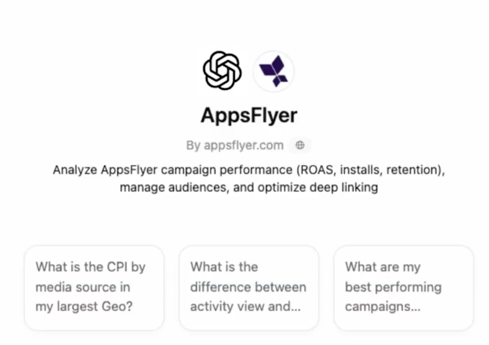
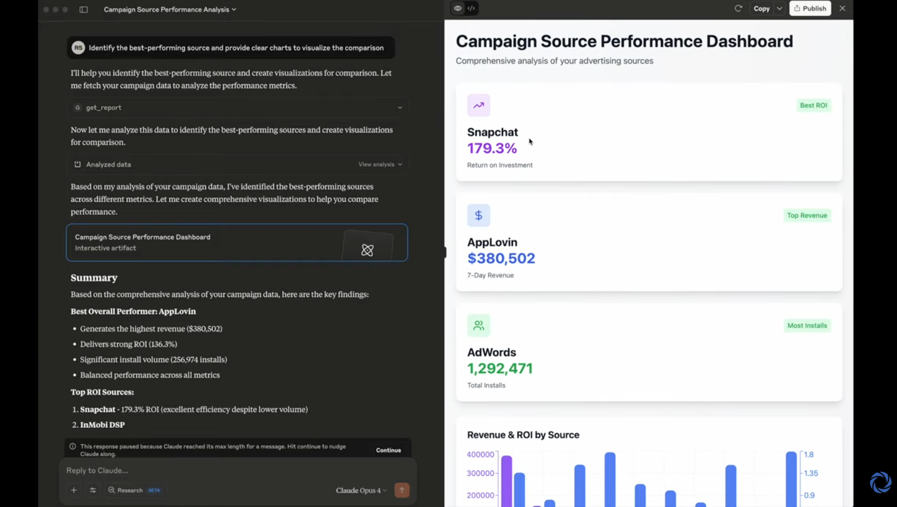
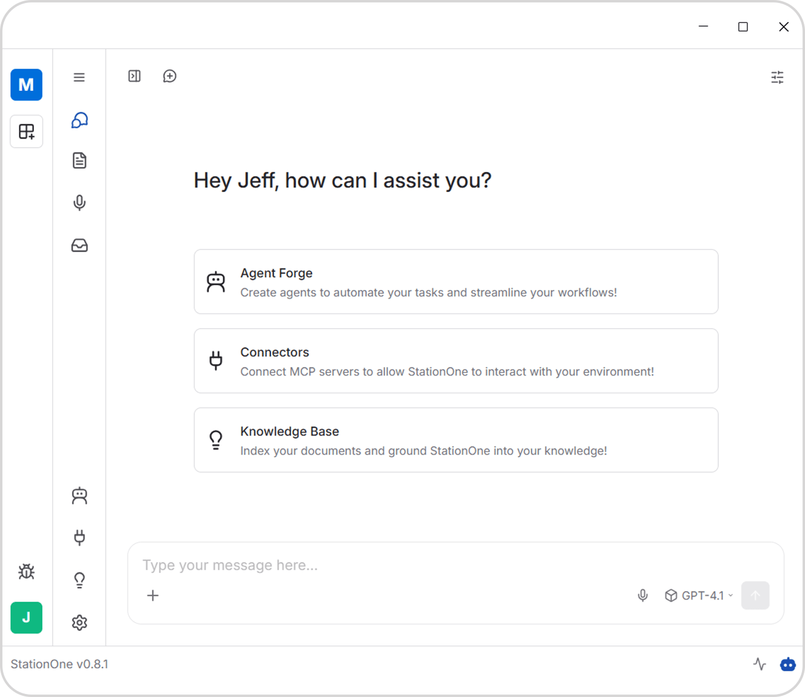

MCP의 등장 → 고객 관점 → 사용법 + 실전 → 경쟁 현황 → 한계와 대안
LLM의 한계와 MCP 등장
DIKW 프레임워크로
고객의 진짜 니즈 이해
설치부터 실전 시나리오
AppsFlyer, Singular,
Kochava 비교
한계, 대안 기술,
그래도 MCP인 이유
거대 언어 모델 — 방대한 텍스트를 학습해 사람처럼 대화하고 추론하는 AI
사람의 질문을 이해하고
맥락을 파악
논리적 분석, 코드 작성,
번역, 요약까지
마케팅, 개발, 분석 등
거의 모든 영역에 적용
AI Agent가 되려면 지식 + 데이터 + 도구가 필요하다 — LLM은 지식만 가지고 있다
방대한 텍스트를 학습한
추론 능력과 언어 이해
실시간 캠페인 성과,
내부 DB, 고객 정보
읽기, 쓰기, API 호출,
파일 생성 등 실행 능력
AI 모델과 외부 데이터/도구를 연결하는 개방형 표준 프로토콜. 16개월 만에 글로벌 빅테크로 급속 확산
USB-C 이전에는 기기마다 다른 케이블이 필요했듯,
MCP 이전에는 AI마다 다른 연동 방법이 필요
LLM에 없던 도구, 자료, 프리셋을 연결하는 3가지 핵심 기능
get_actuals_report
get_revenue_report
이벤트 스키마 정의서
어트리뷰션 모델 문서
/주간_성과_요약
/이상_탐지_분석
Data에서 Wisdom까지 — 모든 단계에 벽이 있다
패턴은 보이지만 "그래서 뭘 해야 하는지" 불명확 → 인사이트 부재, 의사결정 지연
숫자는 있지만 비교·맥락 부여는 수작업 → 반복 리포팅, 데이터팀 의존
매체별 대시보드 로그인, CSV 다운로드, 수동 취합 → 시간 낭비
매일 반복되는 이 과정, 얼마나 걸리는지 생각해 보셨나요?
여러 매체에
흩어진 원시 데이터
스프레드시트에
집계하고 정리
비교를 통해
패턴과 트렌드 발견
데이터 기반
의사결정과 전략
모두가 이 수준의 분석을 원한다 — 문제는 비용이다
매체별 대시보드 로그인, 데이터 수집, 트렌드 파악, 소재 성과 비교
교차 분석, 이상 탐지, 원인 진단, 과거 패턴 대조
전략 판단, 예산 재배분 결정, 액션 플랜 수립
Data → Wisdom은 너무 먼 거리다. MCP가 이 다리를 놓는다
AI가 Airbridge API를 직접 호출한다. 사람이 대시보드에 로그인할 필요 없음
AI가 업무 맥락을 이해한 상태에서 답변한다
데이터 + 맥락을 결합해 실행 가능한 액션 아이템을 도출
Cursor · Windsurf · Gemini CLI
설정 파일에 MCP 서버 URL 추가 → OAuth 자동 시작
// Cursor — .cursor/mcp.json
{ "mcpServers": { "airbridge": {
"url": "https://mcp.airbridge.io/mcp"
}}}
// Windsurf — ~/.codeium/windsurf/mcp_config.json
"serverUrl": "https://mcp.airbridge.io/mcp"
// Gemini CLI — ~/.gemini/settings.json
"httpUrl": "https://mcp.airbridge.io/mcp"Claude · ChatGPT
설정 화면에서 URL 입력 — JSON 편집 불필요
// Claude Desktop & Web (Pro+)
Settings → Connectors → "Add custom connector"
URL: https://mcp.airbridge.io/mcp
Advanced: OAuth Client ID / Secret
// ChatGPT (Plus+ / Business / Enterprise)
Settings → Apps → Developer Mode → "Create app"
URL: https://mcp.airbridge.io/mcp
⚠ OAuth 2.1 + PKCE 필수 (Bearer 직접 불가)JSON 또는 UI에서mcp.airbridge.io/mcp 입력
Airbridge 로그인 →
Consent 화면에서 권한 승인
"어제 네이버 CPA 알려줘"
토큰 갱신은 자동
MCP 연결 후 실제로 이렇게 대화합니다
get_actuals_report 호출
get_actuals_report (전주 비교)
get_actuals_report + get_revenue_report
각 MMP가 실제로 MCP를 어떤 형태로 제공하고 있는지



| AppsFlyer | Singular | Kochava | Airbridge | Adjust | Branch | |
|---|---|---|---|---|---|---|
| MCP 상태 | Open Beta | GA | Private Beta | Beta | 공식 MCP 없음 | 공식 MCP 없음 |
| 접근 방식 | 표준 MCP 서버 | 표준 MCP 서버 | 자체 AI 허브 (데스크톱 앱) |
표준 MCP 서버 | 자체 챗봇 (MCP 아님) |
자체 내장 AI (MCP 아님) |
| 인증 방식 | OAuth | OAuth | 로컬 실행 | OAuth 2.1 + PKCE | - | - |
| 데이터 권한 | Read + Write | Read 중심 | Read-only (Write 예정) |
Read-only | - | - |
| 지원 클라이언트 | Claude, ChatGPT Cursor, VS Code |
Claude, ChatGPT Cursor |
자체 클라이언트 (모델 독립) |
Claude, ChatGPT Cursor, VS Code |
Growth Copilot (자체 챗봇) |
Ivy AI (대시보드 내장) |
| 차별화 | 6개 도메인 커버 n8n 자동화 연동 |
ChatGPT 최초 속도 개선 사례 |
자체 AI 플랫폼 Agent Forge |
OAuth 2.1 + PKCE + 가이드 리소스 |
내장 AI 챗봇 (MCP 아님) |
Ivy AI 내장 링크 자동 생성 |
MMP뿐 아니라 마케터가 매일 쓰는 PA/마케팅 도구도 MCP를 지원하기 시작
경쟁사 분석에서 얻은 시사점 — NOW / NEXT / FUTURE
MCP는 강력하지만, 구조적 한계도 존재한다. 개발자 커뮤니티에서 제기되는 핵심 이슈들
MCP 서버를 연결하면 도구 설명(Tool Description)이 AI의 작업 공간(컨텍스트 윈도우)을 차지합니다
MCP는 식당에 10개의 메뉴판을 펼쳐놓는 것과 같습니다. 메뉴를 읽는 데만 시간이 가고, 정작 요리할 공간이 부족해집니다. 연결만 많다고 좋은 것이 아닙니다.
도구 연결 대신 AI에게 작업 방법을 가르침. 컨텍스트를 훨씬 적게 소비
AI 플랫폼이 직접 API를 호출. ChatGPT Actions, Function Calling 등
Google 주도. Agent-to-Agent 통신. MCP와 상호보완적 관계
AI가 기존 CLI 도구(gh, aws, stripe)를 셸에서 직접 호출. 토큰 최대 94% 절약
| MCP | Skills | Direct API | A2A | CLI | |
|---|---|---|---|---|---|
| 실시간 데이터 | ✓ | ✗ | ✓ | ✓ | ✓ |
| 표준 호환성 | ✓ | ✗ | ✗ | ✓ | ✗ |
| 컨텍스트 효율 | |||||
| 성숙도 | |||||
| 설치 난이도 | |||||
| 엔터프라이즈 거버넌스 |
gh auth, aws configure 등), CLI마다 인증 방식이 제각각이고 도구 단위 권한 제어와 구조화된 감사 로그를 별도로 구축해야 합니다. MCP는 이를 프로토콜 스펙 레벨에서 표준화하므로 CLI 10개의 거버넌스를 따로 만드는 것보다 관리 비용이 낮습니다.모든 상황에 MCP가 최선은 아닙니다. MCP가 진짜 필요한 경우를 알아야 합니다
PART 01 — MCP는 LLM의 "데이터 맹점"을 해결하는 표준 프로토콜
PART 02 — Data → Wisdom은 큰 팀만 가능했던 일 — Agent가 바꾼다
PART 03 — Airbridge MCP로 마케터를 성장 전략가로 전환
PART 04 — 주요 MMP 모두 AI 연동 중 — 후발 주자의 이점으로 승부
PART 05 — MCP 만능은 아니다 — MCP + Skills + API + CLI 상황에 맞는 선택이 필요